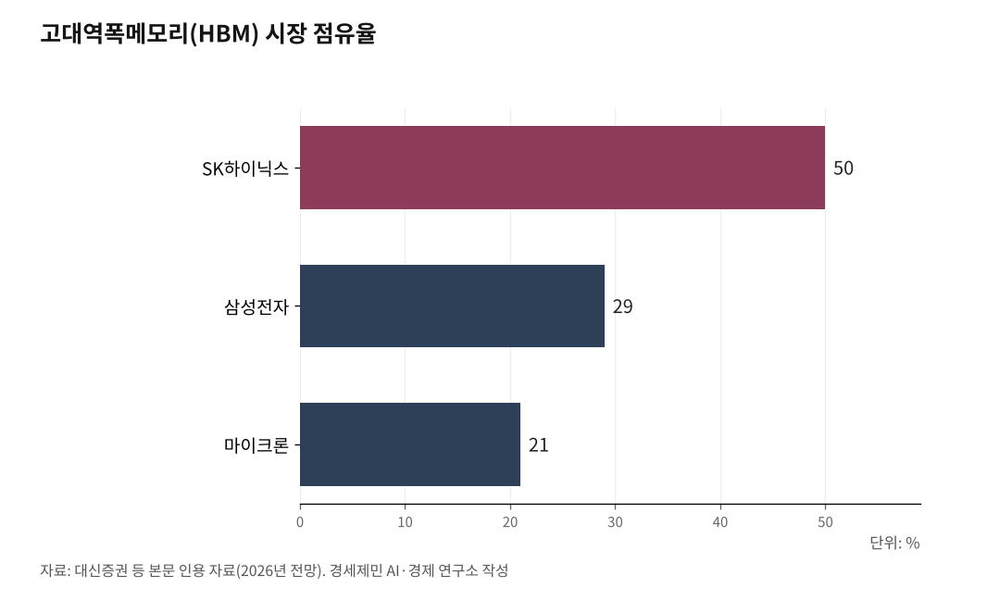

[AI 메모리 전쟁④] AI 산업 병목이 GPU에서 메모리로 옮겨간다
GPU가 아니라 메모리가 AI 성능을 결정한다
머스크, 30조원 들여 반도체 공장 직접 짓는다
250조 영업이익, 노동자와 중소기업에 얼마나 돌아가나
1. AI 추론 시대, 병목이 바뀌었다
1편에서 다룬 임시 저장 공간(KV 캐시) 곱셈 공식이 산업 현장에서 현실이 됐다. 2023년에는 AI 학습이 전체 AI 운영 비용의 3분의 2를 차지했다. 2026년에는 거꾸로 추론(AI가 답변을 만드는 과정)이 3분의 2를 차지할 전망이다.

학습은 한 번이다. 추론은 사용자가 질문할 때마다 반복된다. 하루 수억 건이다.
추론 단계에서 병목은 GPU 연산 속도가 아니다. 메모리에서 데이터를 꺼내오는 속도다. AI가 답변을 만들 때 곱셈 계산 자체는 순식간에 끝난다. 시간을 잡아먹는 구간은 GPU가 메모리에서 데이터를 읽어오는 과정이다. GPU가 빠를수록 메모리를 기다리는 시간이 상대적으로 길어진다.
엔비디아 젠슨 황 최고경영자가 2025년 12월 AI 추론 전용 칩 회사 그로크(Groq) 기술 특허를 200억달러(약 29조원)에 사들이고 핵심 인력을 영입했다. 그로크 칩은 GPU보다 데이터 전송 속도가 7배 빠르다. 황은 2026년 3월 GPU 기술 콘퍼런스(GTC)에서 "기존 시스템으로는 전송 속도가 부족하다"고 말했다. GPU의 제왕이 GPU만으로는 안 된다고 인정한 것이다.
구글도 같은 달 KV 캐시 메모리를 6배로 줄이는 압축 기법 '터보퀀트'를 발표했다.

2. 숫자로 본 초호황, 그리고 리스크
대신증권에 따르면 2026년 고대역폭메모리(HBM, D램을 수직으로 쌓아 초고속 전송을 구현한 메모리) 시장은 581억달러(약 84조원)다. 메모리 반도체 전체는 4,021억달러(약 582조원)로 전년 대비 85% 성장한다. SK하이닉스 HBM 매출 전망 41조2,000억원(점유율 50%), 삼성전자 24조원(29%). 양사 합산 영업이익 전망은 204조~250조원이다.
이면이 있다. HBM은 D램 칩 12개를 쌓는다. 같은 반도체 원판(웨이퍼)에서 나오는 칩 수가 일반 D램보다 35~45% 적다. HBM을 늘리면 일반 D램이 줄어든다. 서버용 차세대 D램(DDR5) 가격이 2026년 말까지 2배 오를 수 있다는 전망이 나오는 배경이다.
중국 창신메모리는 HBM3를 2026~2027년에 대량 생산하겠다고 나섰다. 미국 대중국 반도체 장비 수출 통제 유예는 2026년 11월 끝난다. 연장되지 않으면 삼성전자 시안 낸드 공장, SK하이닉스 우시 D램 공장에 직접 영향이 간다.
3. 머스크가 직접 공장을 짓는 이유
2026년 3월 22일 머스크가 텍사스 오스틴에 반도체 공장 '테라팹(Terafab)' 건설을 발표했다. 테슬라·스페이스X·xAI 합작이다. 연산 칩, 메모리, 조립·포장(패키징)을 한 공장에서 만드는 통합 시설이다. 미국 투자은행 모건스탠리는 투자비를 200억달러(약 30조원) 이상으로 추산하며 "헤라클레스적 과업"이라고 평했다.
머스크 발언이 핵심이다. "메모리가 연산 칩보다 더 큰 공급 제약 요인이 될 수 있다." 삼성전자와 170억달러(약 25조원) 위탁생산 계약을 맺고도 자체 공장을 짓는다. 삼성전자 텍사스 테일러 공장에 개인 사무실까지 요청했다.
다만 반도체 생산시설(팹) 건설부터 정상 가동까지 통상 5~10년이다. 머스크에게 반도체 제조 경험은 없다. 거대 기술 기업이 메모리를 직접 만들겠다고 나섰다. 한국 기업 과점 지위가 영속적이지 않을 수 있다는 신호이기도 하다.
4. 규모·밀도·범위의 경제, 중소기업은 어디에
초호황 뒤에 세 가지 경제 구조가 작동한다.
규모의 경제다. 많이 만들수록 제품 하나당 비용(평균비용)이 줄어드는 원리다. 반도체 공장은 짓는 데 수십조원이 든다. 공장을 한 번 지으면 칩을 한 개 더 찍어내는 데 드는 추가 비용(한계비용)은 매우 작다. 생산량이 늘수록 공장 건설비가 제품 하나하나에 얇게 퍼진다. 평균비용이 계속 떨어진다.
이런 구조에서는 먼저 대규모 투자를 한 기업이 압도적으로 유리하다. 뒤늦게 뛰어드는 기업은 같은 규모 공장을 짓고 불량률을 낮추는 데 수십조원과 수년이 필요하다. 따라잡기 전에 먼저 투자한 기업은 이미 평균비용을 훨씬 낮춘 상태다. 결국 소수 기업만 살아남는다.
경제학에서는 이를 자연독점이라 한다. 규모의 경제가 극단적으로 작동하면 시장을 하나 또는 둘이 지배하는 구조가 된다. HBM 시장이 SK하이닉스(50%), 삼성전자(29%), 마이크론(21%) 세 곳으로 굳어진 것이 이 원리다. SK하이닉스 용인 반도체 단지 투자가 120조원에서 600조원으로 5배 늘었다. 삼성전자는 평택 P4 준공을 2027년에서 2026년 1분기로 앞당겼다. HBM 적층 불량률을 낮추는 데 최소 3년이 걸린다. 진입장벽이 높을수록 과점은 굳어진다.
밀도의 경제다. 같은 공간에 더 많이 집어넣을수록 효율이 올라가는 원리다. HBM4는 D램 16단 적층이다. 데이터가 오가는 통로가 2,048개다. 같은 면적에 더 많은 용량을 넣는다. 용인·청주·인천에 설계부터 검사까지 반경 수십km 안에 모여 있는 반도체 단지 구조도 밀도의 경제다.
범위의 경제다. 한 가지만 만드는 것보다 여러 가지를 함께 만들 때 비용이 줄어드는 원리다. 삼성전자와 SK하이닉스는 HBM, 차세대 D램(DDR5), 낸드, 기업용 저장장치(SSD)를 동시에 생산한다. AI 추론 서버에는 이 모두가 탑재된다. 수요가 한쪽에서 줄어도 다른 쪽에서 메운다.
이 구조에서 중소기업은 다른 위치에 있다. 인천 한미반도체는 HBM 조립·포장 핵심 장비인 열압착접합장비(TC본더) 시장을 석권하며 2024년 매출 5,589억원을 기록했다. 전년 대비 252% 증가다. 송도 제너셈은 레이저 조립 장비를 미국·중국·멕시코에 수출한다. 매출이 급증한 것은 사실이다. 다만 대기업 납품 의존도가 높은 구조에서 초호황 이익이 협력사까지 내려가는지, 호황이 꺾이면 충격을 누가 먼저 흡수하는지는 별개 문제다.
5. 250조 잔치, 과실은 어디로 가나
SK하이닉스 영업이익률 47%. HBM 판매 단가는 일반 D램(DDR5)의 5~10배, 생산원가는 3~4배다. 제조업 역사에서 이례적이다. 용인 600조원, 청주 20조원 투자가 지역 고용과 세수를 만든다. 다만 반도체 제조는 고도 자동화 산업이다. 먼지 없는 작업실(클린룸) 안에서 반도체 원판을 나르는 건 무인 운반 차량이다.
대기업과 협력 중소기업 사이 이익 배분을 보여주는 공개 자료는 찾기 어렵다.
2017~2018년 초호황 뒤에 2019년 침체가 왔다. 현대차증권은 "AI 수요가 기존 반도체 순환 패턴을 깨고 6년 연속 성장할 수 있다"고 전망했다. 전망은 전망이다. 250조 영업이익이 실현된다면, 그 과실이 노동자와 지역사회와 협력 중소기업에 어떻게 돌아가는지가 다음 질문이다.
[참고자료]
· 대신증권, "2026년 메모리반도체 시장 전망", 2026.1.5.
· SK하이닉스 뉴스룸, "2026년 시장 전망: HBM이 이끄는 메모리 슈퍼사이클에 주목", 2026.
· 글로벌이코노믹, "삼성·SK하이닉스, 2026년 '250조 잭팟' 터진다", 2026.1.21.
· 뉴데일리, "엔비디아 공급망이 HBM 승부 갈랐다", 2026.3.30.
· HPCwire, "Nvidia's Shift from GPUs and AI 'Inference King' Economics", 2026.3.26.
· SiliconANGLE, "AI memory optimization becomes the new kingmaker", 2026.4.1.
· AIwire, "Did Google Just Ease the AI Memory Bottleneck?", 2026.3.31.
· 파이낸셜뉴스, "머스크, 테슬라·스페이스X 합작해 텍사스에 반도체 공장 건설", 2026.3.23.
· 서울경제, "머스크, 오스틴 테라팹서 '우주용 반도체' 만든다", 2026.3.22.
· 글로벌이코노믹, "일론 머스크, 삼성전자 텍사스 공장에 '사무실' 요청", 2025.12.16.
· 카운터포인트리서치, HBM 시장 점유율 데이터, 2025.
· 비즈니스포스트, "삼성·SK하이닉스, 2026년 영업이익 100조 달성 두고 경주", 2025.12.26.
#AI메모리전쟁 #HBM #메모리초호황 #SK하이닉스 #삼성전자 #엔비디아 #일론머스크 #테라팹 #반도체 #GPU #AI추론 #메모리병목 #규모의경제 #중소기업 #정의로운전환